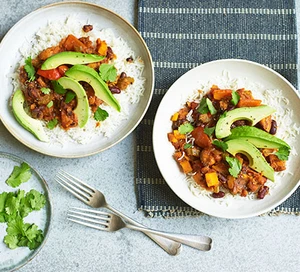

Creamy Pasta

Description
A homegrown favourite that is delicious as it is easy
Made with lots of great veggies, it is full of flavour, protein and zest.
Ingredients
- 2 Sweet potatoes, peeled and cut into chunks
- 1 Onion chopped.
- 2 carrots, chopped.
- 2 celery sticks, chopped
- 2 garlic cloves, crushed
- 1 tbsp tomatoe puree
- 1 red pepper, cut into chucnks
- 2 cans of chopped tomatoes
- 1 can black beans
- 1 can kidney beans
- 1 tbsp tomatoe puree
- Olive Oil
e
Steps
- Bring some water to a boil and add the pasta
- Cook al dente
- Chop up the garlic finely
- Heat some olive oil in a pan and add the garlic
- Allow to saute till the fragrance releases
- Et voila! The dinner, she is aserved.